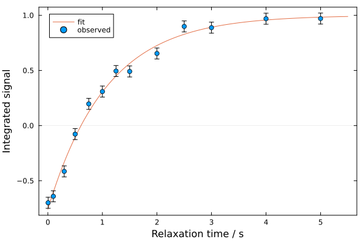

1D Relaxation Analysis
The relaxation analysis module in NMRAnalysis.jl provides a basic tool for analyzing R1 and R2 measurements, fitting either to an exponential decay:
\[I(\tau) = I_0 \exp\left(-R\tau\right)\]
or to an inversion-recovery model:
\[I(\tau) = I_0 \cdot \left[1 - A \exp\left(-R\tau\right)\right]\]
where $I_0$ is the maximum intensity, $R$ is the relaxation rate, and $A$ is the amplitude of the recovery phase (if used).
Launching Relaxation Analysis
Use relaxation() to launch the analysis of a relaxation experiment.
using NMRAnalysis
relaxation() # prompt for experiment folder and experiment type
relaxation("examples/relaxation/1") # specify experiment folder, prompt for experiment type
relaxation("examples/relaxation/2", ir=true) # use inversion-recovery model
relaxation("examples/relaxation/3",
[0.001, 0.002, 0.004, 0.006, 0.010, 0.015, 0.020, 0.030, 0.050],
ir=false) # give relaxation times manually, use exponential fit- If no folder is given, you will be prompted to enter a path
- You can use the
ir=true/falseoption to directly specify which model to use - You can provide a list of relaxation times - otherwise these will be parsed from a vclist or vdlist
Analysis Workflow
1. Parameter Confirmation
When you launch the analysis, the program will parse the experiment parameters and ask you to confirm or correct them:
Current directory: /Users/chris/git/NMRAnalysis.jl
Enter path to relaxation experiment (i.e. Bruker experiment folder): examples/relaxation/T2
Enter 'IR' for inversion-recovery otherwise press ENTER: If a vclist file is used, you will be asked to specify the conversion factor to relaxation times:
Found vclist in acqus. Please enter milliseconds per loop: 2. Integration Region Selection
A spectrum plot will be displayed, and you'll be asked to define the integration region and noise estimation area:
Defining integration region - please enter first chemical shift: -61.6
Defining integration region - please enter second chemical shift: -61.7
Enter a chemical shift in the center of the noise region: -200The program then displays the selected integration and noise regions for confirmation:
3. Fitting and Results
After pressing enter, the fit runs automatically. Results are displayed in the terminal while a fit plot is shown:

┌ Info: Relaxation results
│
│ Current directory: /Users/chris/git/NMRAnalysis.jl
│ Experiment: examples/relaxation/T2/pdata/1
│
│ Integration region: -61.7 - -61.6 ppm
│ Noise region: -200.05 - -199.95 ppm
│
│ Fitted relaxation rate: 2.415 ± 0.058 s⁻¹
└ Fitted relaxation time: 0.4141 ± 0.0099 sFits to the inversion recovery model will also report the amplitude of the recovery phase.

┌ Info: Relaxation results
│
│ Current directory: /Users/chris/git/NMRAnalysis.jl
│ Experiment: examples/relaxation/ir/pdata/1
│
│ Integration region: 1.0 - 2.0 ppm
│ Noise region: -2.5 - -1.5 ppm
│
│ Fitted relaxation rate: 0.93 ± 0.071 s⁻¹
│ Fitted relaxation time: 1.075 ± 0.082 s
└ Inversion-recovery amplitude: 1.759 ± 0.0594. Saving Results
Finally, you can save the fit figure:
Enter a filename to save figure (press enter to skip): relaxation-fit.png
Figure saved to relaxation-fit.png.The file format is automatically chosen based on the extension (e.g., .png or .pdf).
Noise Estimation
Noise levels for peak integrals are calculated by integrating a matching region of noise and taking the standard deviation across relaxation delays. This approach relies on good quality baselines for accurate noise estimation.